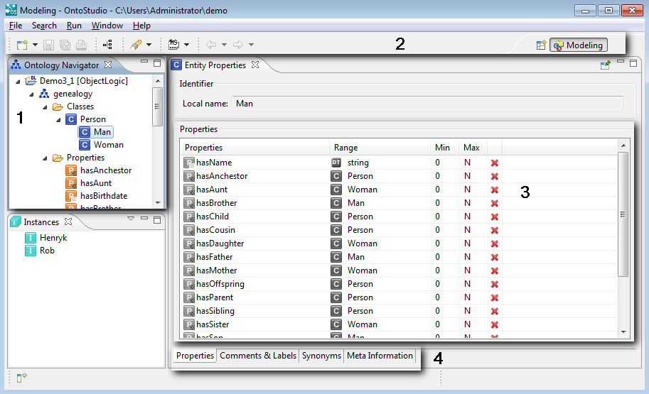
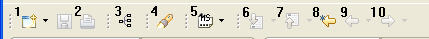
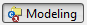
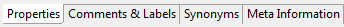
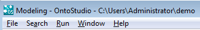
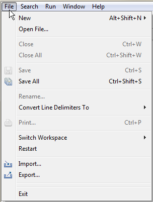
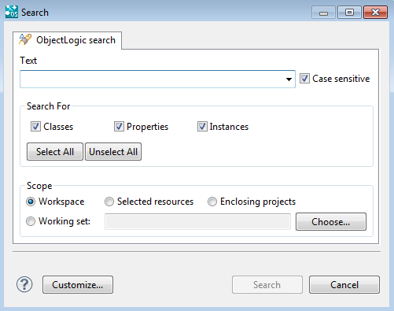
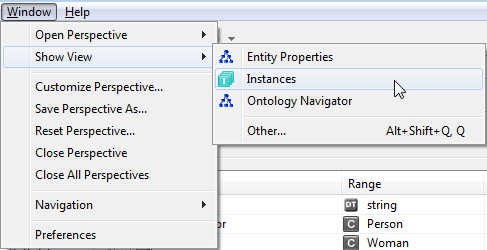
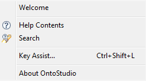
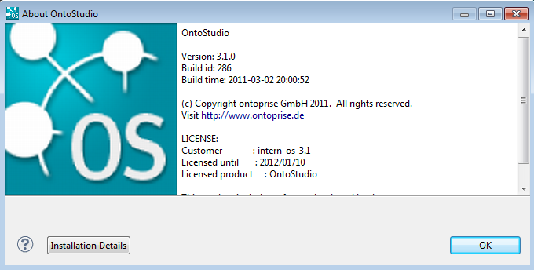

|

|
|
User Interface Overview |
|
|
|
|
User Interface Overview |

1 |
Navigation tree |
2 |
Tool bar |
3 |
Main area: It shows the information on the elements chosen in the navigation |
4 |
Tabs; If the information of the main area is displayed on multiple pages you can access them via the set of tabs. |
Tool Bar

1 |
Opens the project wizard |
2 |
Save and Print function |
3 |
Generates a graph starting from the given class |
4 |
Search function |
5 |
ID Display Style (Local, URI, QName) |
6 |
Next Annotation [CTRL + .] |
7 |
Previous Annotation [CTRL + ,] |
8 |
Last Edit Location |
9 |
Back [ALT + Left] |
10 |
Forward [ALT + Right] |
Modeling View

All of the properties of an element selected in the navigation tree can be edited in the modeling view.
The editable information is often divided into a set of property pages which can be accessed using tabs at the bottom of the modeling view:

Menu Bar

Use the menu bar to access the main features of Onto Studio, which include e.g. the import and export functions, creating new ontologies or opening different perspectives, to name but a few.
Most of the menu items are default items of the Eclipse framework which are also described in the Eclipse documentation at eclipse.org.
File Menu

The file menu contains the standard operations of the program. Some operations are only highlighted in the special use cases.
Search Menu

Using OntoStudio's search function, you can run a search on classes, properties, relations and instances in your workspace or in a set of your projects. The result of your search is displayed in the results view.
Window Menu

The Window menu offers you different ways of quickly switching between the different views of OntoStudio.
Help Menu

The Help menu offers you an easy way to get the basic information about OntoStudio, it's version number and the plug-in details.
